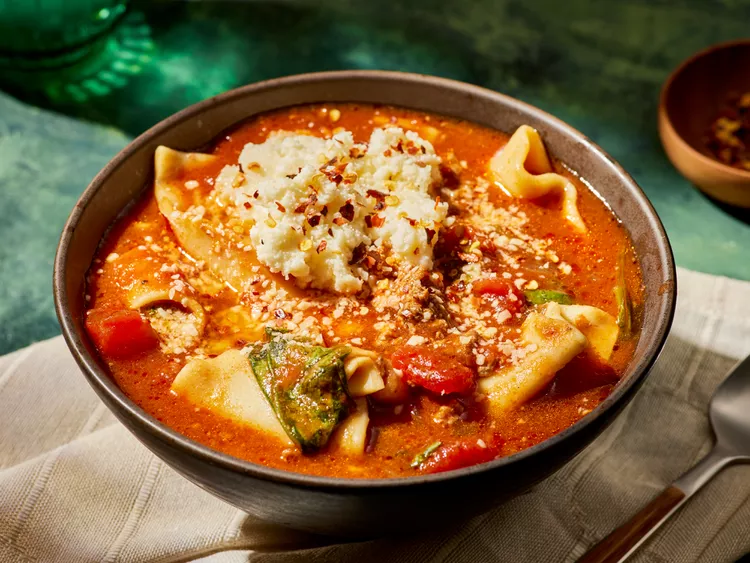

Lasagna

Crockpot Lasagna Soup
This hearty, saucy crockpot lasagna soup feeds the whole family and then some. Rich tomato broth with lasagna sheets and fresh spinach are topped with a dollop of ricotta cheese. The perfect comfort food.
Ingredients
- 1 1/2 pounds 93/7 lean ground beef
- 1 1/2 cups finely chopped yellow on
- 6 cloves garlic, finely chopped
- 1 1/2 teaspoons table salt, divided
Steps
- Gather all ingredients.
- Combine ground beef, onion, garlic, 1/2 teaspoon salt, and 1/2 teaspoon black pepper in a large nonstick skillet over medium-high. Cook, stirring occasionally, until beef is no longer pink and onions are softened, about 8 minutes. Transfer to a 6-quart slow cooker.
- Stir in broth, marinara sauce, diced tomatoes, tomato paste, crushed red pepper, remaining 1 teaspoon salt, and remaining 1/4 teaspoon black pepper until combined.